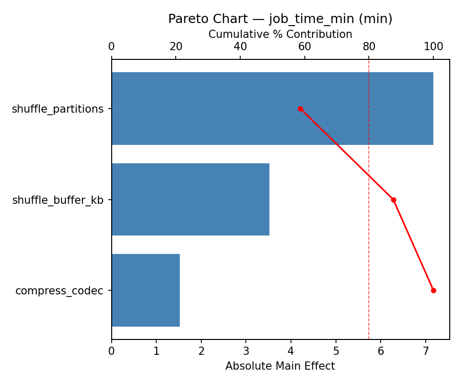
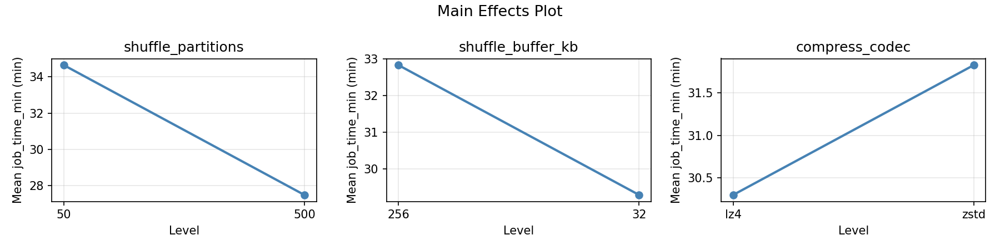
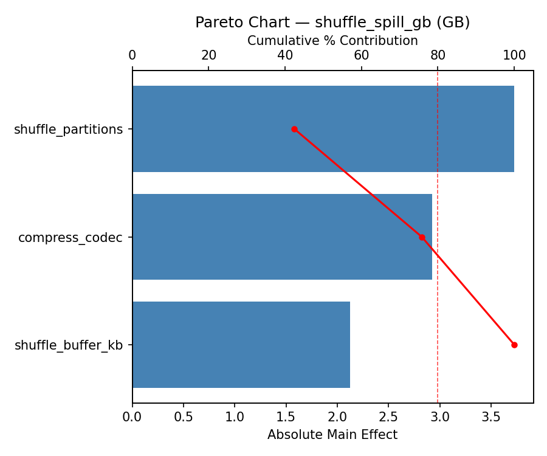
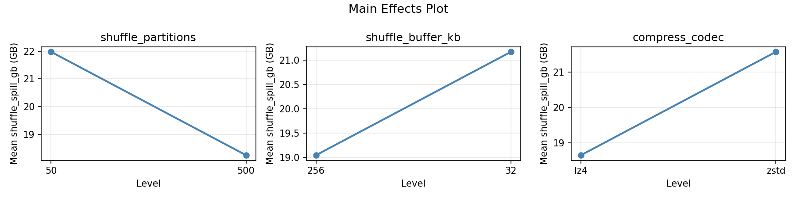
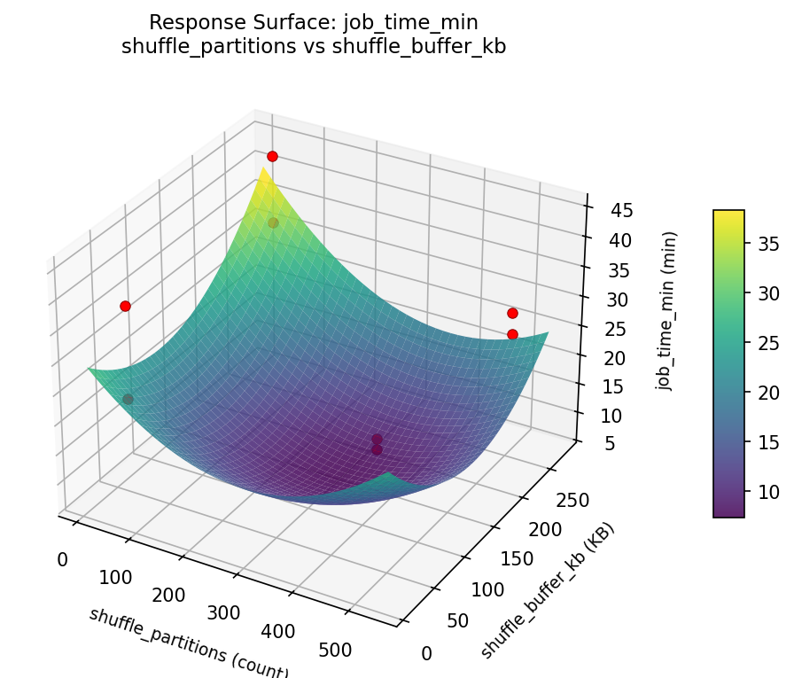
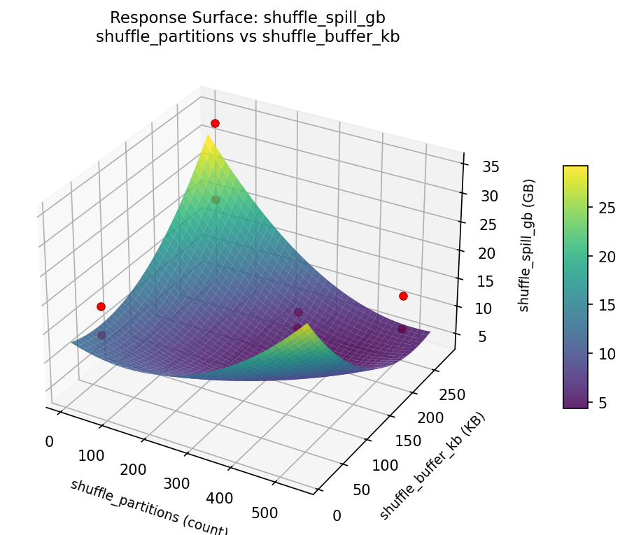

Summary
This experiment investigates spark shuffle optimization. Central Composite design to optimize Spark shuffle partitions, buffer size, and compression for job time.
The design varies 3 factors: shuffle partitions (count), ranging from 50 to 500, shuffle buffer kb (KB), ranging from 32 to 256, and compress codec, ranging from lz4 to zstd. The goal is to optimize 2 responses: job time min (min) (minimize) and shuffle spill gb (GB) (minimize). Fixed conditions held constant across all runs include executor memory = 8g, executor cores = 4.
A full factorial design was used to explore all 8 possible combinations of the 3 factors at two levels. This guarantees that every main effect and interaction can be estimated independently, at the cost of a larger experiment (8 runs).
Key Findings
For job time min, the most influential factors were shuffle partitions (79.4%), shuffle buffer kb (13.9%), compress codec (6.7%). The best observed value was 22.9 (at shuffle partitions = 500, shuffle buffer kb = 256, compress codec = lz4).
For shuffle spill gb, the most influential factors were shuffle partitions (58.6%), shuffle buffer kb (41.2%), compress codec (0.1%). The best observed value was 7.3 (at shuffle partitions = 50, shuffle buffer kb = 256, compress codec = zstd).
Recommended Next Steps
- Consider whether any fixed factors should be varied in a future study.
Experimental Setup
Factors
| Factor | Low | High | Unit |
|---|
shuffle_partitions | 50 | 500 | count |
shuffle_buffer_kb | 32 | 256 | KB |
compress_codec | lz4 | zstd | |
Fixed: executor_memory = 8g, executor_cores = 4
Responses
| Response | Direction | Unit |
|---|
job_time_min | ↓ minimize | min |
shuffle_spill_gb | ↓ minimize | GB |
Configuration
{
"metadata": {
"name": "Spark Shuffle Optimization",
"description": "Central Composite design to optimize Spark shuffle partitions, buffer size, and compression for job time"
},
"factors": [
{
"name": "shuffle_partitions",
"levels": [
"50",
"500"
],
"type": "continuous",
"unit": "count"
},
{
"name": "shuffle_buffer_kb",
"levels": [
"32",
"256"
],
"type": "continuous",
"unit": "KB"
},
{
"name": "compress_codec",
"levels": [
"lz4",
"zstd"
],
"type": "categorical",
"unit": ""
}
],
"fixed_factors": {
"executor_memory": "8g",
"executor_cores": "4"
},
"responses": [
{
"name": "job_time_min",
"optimize": "minimize",
"unit": "min"
},
{
"name": "shuffle_spill_gb",
"optimize": "minimize",
"unit": "GB"
}
],
"settings": {
"operation": "full_factorial",
"test_script": "use_cases/37_spark_shuffle_optimization/sim.sh"
}
}
Experimental Matrix
The Full Factorial Design produces 8 runs. Each row is one experiment with specific factor settings.
| Run | shuffle_partitions | shuffle_buffer_kb | compress_codec |
|---|
| 1 | 50 | 256 | zstd |
| 2 | 500 | 32 | lz4 |
| 3 | 500 | 256 | lz4 |
| 4 | 500 | 256 | zstd |
| 5 | 50 | 256 | lz4 |
| 6 | 500 | 32 | zstd |
| 7 | 50 | 32 | lz4 |
| 8 | 50 | 32 | zstd |
Step-by-Step Workflow
1
Preview the design
$ python doe.py info --config use_cases/37_spark_shuffle_optimization/config.json
2
Generate the runner script
$ python doe.py generate --config use_cases/37_spark_shuffle_optimization/config.json \
--output use_cases/37_spark_shuffle_optimization/results/run.sh --seed 42
3
Execute the experiments
$ bash use_cases/37_spark_shuffle_optimization/results/run.sh
4
Analyze results
$ python doe.py analyze --config use_cases/37_spark_shuffle_optimization/config.json
5
Get optimization recommendations
$ python doe.py optimize --config use_cases/37_spark_shuffle_optimization/config.json
6
Multi-objective optimization
With 2 competing responses, use --multi to find the best compromise via Derringer–Suich desirability.
$ python doe.py optimize --config use_cases/37_spark_shuffle_optimization/config.json --multi
7
Generate the HTML report
$ python doe.py report --config use_cases/37_spark_shuffle_optimization/config.json \
--output use_cases/37_spark_shuffle_optimization/results/report.html
Features Exercised
| Feature | Value |
|---|
| Design type | full_factorial |
| Factor types | continuous (2), categorical (1) |
| Arg style | double-dash |
| Responses | 2 (job_time_min ↓, shuffle_spill_gb ↓) |
| Total runs | 8 |
Analysis Results
Generated from actual experiment runs using the DOE Helper Tool.
Response: job_time_min
Top factors: shuffle_partitions (79.4%), shuffle_buffer_kb (13.9%), compress_codec (6.7%).
ANOVA
| Source | DF | SS | MS | F | p-value |
|---|
| Source | DF | SS | MS | F | p-value |
| shuffle_partitions | 1 | 21.4512 | 21.4512 | 0.208 | 0.7274 |
| shuffle_buffer_kb | 1 | 0.6613 | 0.6613 | 0.006 | 0.9491 |
| compress_codec | 1 | 0.1512 | 0.1512 | 0.001 | 0.9756 |
| shuffle_partitions*shuffle_buffer_kb | 1 | 24.8513 | 24.8513 | 0.241 | 0.7093 |
| shuffle_partitions*compress_codec | 1 | 4.6512 | 4.6512 | 0.045 | 0.8667 |
| shuffle_buffer_kb*compress_codec | 1 | 205.0312 | 205.0312 | 1.991 | 0.3925 |
| Error | 1 | 102.9613 | 102.9613 | | |
| Total | 7 | 359.7587 | 51.3941 | | |
Pareto Chart

Main Effects Plot

Response: shuffle_spill_gb
Top factors: shuffle_partitions (58.6%), shuffle_buffer_kb (41.2%), compress_codec (0.1%).
ANOVA
| Source | DF | SS | MS | F | p-value |
|---|
| Source | DF | SS | MS | F | p-value |
| shuffle_partitions | 1 | 197.0112 | 197.0112 | 8.648 | 0.2087 |
| shuffle_buffer_kb | 1 | 97.3013 | 97.3013 | 4.271 | 0.2869 |
| compress_codec | 1 | 0.0012 | 0.0012 | 0.000 | 0.9953 |
| shuffle_partitions*shuffle_buffer_kb | 1 | 51.5113 | 51.5113 | 2.261 | 0.3736 |
| shuffle_partitions*compress_codec | 1 | 175.7813 | 175.7813 | 7.716 | 0.2200 |
| shuffle_buffer_kb*compress_codec | 1 | 2.1013 | 2.1013 | 0.092 | 0.8123 |
| Error | 1 | 22.7812 | 22.7812 | | |
| Total | 7 | 546.4887 | 78.0698 | | |
Pareto Chart

Main Effects Plot

Response Surface Plots
3D surfaces fitted with quadratic RSM. Red dots are observed data points.
job time min shuffle partitions vs shuffle buffer kb

shuffle spill gb shuffle partitions vs shuffle buffer kb

Multi-Objective Optimization
When responses compete, Derringer–Suich desirability finds the best compromise.
Each response is scaled to a 0–1 desirability, then combined via a weighted geometric mean.
Overall Desirability
D = 0.8947
Per-Response Desirability
| Response | Weight | Desirability | Predicted | Dir |
|---|
job_time_min |
1.5 |
|
25.20 0.8568 25.20 min |
↓ |
shuffle_spill_gb |
1.0 |
|
7.30 0.9545 7.30 GB |
↓ |
Recommended Settings
| Factor | Value |
|---|
shuffle_partitions | 50 count |
shuffle_buffer_kb | 256 KB |
compress_codec | lz4 |
Source: from observed run #4
Trade-off Summary
Sacrifice = how much worse than single-objective best.
| Response | Predicted | Best Observed | Sacrifice |
|---|
shuffle_spill_gb | 7.30 | 7.30 | +0.00 |
Top 3 Runs by Desirability
| Run | D | Factor Settings |
|---|
| #6 | 0.7811 | shuffle_partitions=50, shuffle_buffer_kb=32, compress_codec=zstd |
| #3 | 0.7251 | shuffle_partitions=50, shuffle_buffer_kb=256, compress_codec=zstd |
Model Quality
| Response | R² | Type |
|---|
shuffle_spill_gb | 0.5291 | linear |
Full Multi-Objective Output
============================================================
MULTI-OBJECTIVE OPTIMIZATION
Method: Derringer-Suich Desirability Function
============================================================
Overall desirability: D = 0.8947
Response Weight Desirability Predicted Direction
---------------------------------------------------------------------
job_time_min 1.5 0.8568 25.20 min ↓
shuffle_spill_gb 1.0 0.9545 7.30 GB ↓
Recommended settings:
shuffle_partitions = 50 count
shuffle_buffer_kb = 256 KB
compress_codec = lz4
(from observed run #4)
Trade-off summary:
job_time_min: 25.20 (best observed: 22.90, sacrifice: +2.30)
shuffle_spill_gb: 7.30 (best observed: 7.30, sacrifice: +0.00)
Model quality:
job_time_min: R² = 0.6233 (linear)
shuffle_spill_gb: R² = 0.5291 (linear)
Top 3 observed runs by overall desirability:
1. Run #4 (D=0.8947): shuffle_partitions=50, shuffle_buffer_kb=256, compress_codec=lz4
2. Run #6 (D=0.7811): shuffle_partitions=50, shuffle_buffer_kb=32, compress_codec=zstd
3. Run #3 (D=0.7251): shuffle_partitions=50, shuffle_buffer_kb=256, compress_codec=zstd
Full Analysis Output
=== Main Effects: job_time_min ===
Factor Effect Std Error % Contribution
--------------------------------------------------------------
shuffle_partitions 3.2750 2.5346 79.4%
shuffle_buffer_kb 0.5750 2.5346 13.9%
compress_codec -0.2750 2.5346 6.7%
=== ANOVA Table: job_time_min ===
Source DF SS MS F p-value
-----------------------------------------------------------------------------
shuffle_partitions 1 21.4512 21.4512 0.208 0.7274
shuffle_buffer_kb 1 0.6613 0.6613 0.006 0.9491
compress_codec 1 0.1512 0.1512 0.001 0.9756
shuffle_partitions*shuffle_buffer_kb 1 24.8513 24.8513 0.241 0.7093
shuffle_partitions*compress_codec 1 4.6512 4.6512 0.045 0.8667
shuffle_buffer_kb*compress_codec 1 205.0312 205.0312 1.991 0.3925
Error 1 102.9613 102.9613
Total 7 359.7587 51.3941
=== Interaction Effects: job_time_min ===
Factor A Factor B Interaction % Contribution
------------------------------------------------------------------------
shuffle_buffer_kb compress_codec -10.1250 66.7%
shuffle_partitions shuffle_buffer_kb 3.5250 23.2%
shuffle_partitions compress_codec -1.5250 10.0%
=== Summary Statistics: job_time_min ===
shuffle_partitions:
Level N Mean Std Min Max
------------------------------------------------------------
50 4 29.4250 2.5145 27.1000 33.0000
500 4 32.7000 10.3173 22.9000 44.3000
shuffle_buffer_kb:
Level N Mean Std Min Max
------------------------------------------------------------
256 4 30.7750 6.5576 22.9000 38.4000
32 4 31.3500 8.7577 25.2000 44.3000
compress_codec:
Level N Mean Std Min Max
------------------------------------------------------------
lz4 4 31.2000 9.1655 22.9000 44.3000
zstd 4 30.9250 5.9885 25.2000 38.4000
=== Main Effects: shuffle_spill_gb ===
Factor Effect Std Error % Contribution
--------------------------------------------------------------
shuffle_partitions -9.9250 3.1239 58.6%
shuffle_buffer_kb -6.9750 3.1239 41.2%
compress_codec -0.0250 3.1239 0.1%
=== ANOVA Table: shuffle_spill_gb ===
Source DF SS MS F p-value
-----------------------------------------------------------------------------
shuffle_partitions 1 197.0112 197.0112 8.648 0.2087
shuffle_buffer_kb 1 97.3013 97.3013 4.271 0.2869
compress_codec 1 0.0012 0.0012 0.000 0.9953
shuffle_partitions*shuffle_buffer_kb 1 51.5113 51.5113 2.261 0.3736
shuffle_partitions*compress_codec 1 175.7813 175.7813 7.716 0.2200
shuffle_buffer_kb*compress_codec 1 2.1013 2.1013 0.092 0.8123
Error 1 22.7812 22.7812
Total 7 546.4887 78.0698
=== Interaction Effects: shuffle_spill_gb ===
Factor A Factor B Interaction % Contribution
------------------------------------------------------------------------
shuffle_partitions compress_codec -9.3750 60.6%
shuffle_partitions shuffle_buffer_kb 5.0750 32.8%
shuffle_buffer_kb compress_codec -1.0250 6.6%
=== Summary Statistics: shuffle_spill_gb ===
shuffle_partitions:
Level N Mean Std Min Max
------------------------------------------------------------
50 4 25.0750 8.9097 13.2000 34.6000
500 4 15.1500 6.0918 7.3000 21.1000
shuffle_buffer_kb:
Level N Mean Std Min Max
------------------------------------------------------------
256 4 23.6000 9.3452 13.6000 34.6000
32 4 16.6250 7.8991 7.3000 24.9000
compress_codec:
Level N Mean Std Min Max
------------------------------------------------------------
lz4 4 20.1250 5.9752 13.2000 27.6000
zstd 4 20.1000 12.1021 7.3000 34.6000
Optimization Recommendations
=== Optimization: job_time_min ===
Direction: minimize
Best observed run: #6
shuffle_partitions = 500
shuffle_buffer_kb = 256
compress_codec = lz4
Value: 22.9
RSM Model (linear, R² = 0.5581, Adj R² = 0.2267):
Coefficients:
intercept +31.0625
shuffle_partitions -2.6875
shuffle_buffer_kb -2.2375
compress_codec -3.5875
Predicted optimum (from linear model, at observed points):
shuffle_partitions = 50
shuffle_buffer_kb = 32
compress_codec = lz4
Predicted value: 39.5750
Surface optimum (via L-BFGS-B, linear model):
shuffle_partitions = 500
shuffle_buffer_kb = 256
compress_codec = zstd
Predicted value: 22.5500
Model quality: Moderate fit — use predictions directionally, not precisely.
Factor importance:
1. compress_codec (effect: -7.2, contribution: 42.1%)
2. shuffle_partitions (effect: -5.4, contribution: 31.6%)
3. shuffle_buffer_kb (effect: 4.5, contribution: 26.3%)
=== Optimization: shuffle_spill_gb ===
Direction: minimize
Best observed run: #4
shuffle_partitions = 50
shuffle_buffer_kb = 256
compress_codec = zstd
Value: 7.3
RSM Model (linear, R² = 0.9233, Adj R² = 0.8658):
Coefficients:
intercept +20.1125
shuffle_partitions +3.3875
shuffle_buffer_kb -6.9375
compress_codec -1.8625
Predicted optimum (from linear model, at observed points):
shuffle_partitions = 500
shuffle_buffer_kb = 32
compress_codec = lz4
Predicted value: 32.3000
Surface optimum (via L-BFGS-B, linear model):
shuffle_partitions = 50
shuffle_buffer_kb = 256
compress_codec = zstd
Predicted value: 7.9250
Model quality: Excellent fit — surface predictions are reliable.
Factor importance:
1. shuffle_buffer_kb (effect: 13.9, contribution: 56.9%)
2. shuffle_partitions (effect: 6.8, contribution: 27.8%)
3. compress_codec (effect: -3.7, contribution: 15.3%)